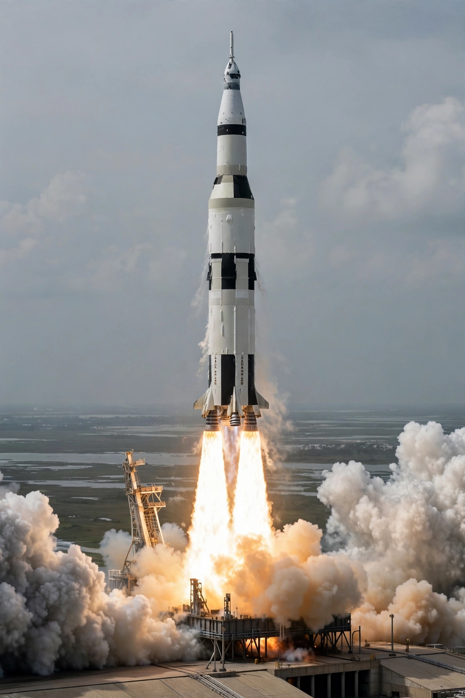

Saturn V
From Wikipedia, the free encyclopedia

Saturn V liftoff.The Saturn V was a super heavy-lift launch vehicle developed by NASA under the Apollo program and flown from 1967 to 1973. At 110.6 metres tall with five F-1 engines producing 7.6 million pounds of thrust on the first stage, it remains the tallest, heaviest and most powerful rocket ever flown operationally, and the only one to carry humans beyond low Earth orbit. Thirteen launches, all successful, included every lunar landing mission and the Skylab space station.
Development
Wernher von Braun\'s team at Marshall Space Flight Center designed the Saturn family; Boeing, North American, Douglas and IBM built stages and instruments. The all-up testing decision — flying the full stack from the second launch — accelerated the schedule to meet Kennedy\'s end-of-decade goal.
The rocket
The S-IC first stage burned kerosene and liquid oxygen for about 2.5 minutes; the S-II second stage and S-IVB third stage used liquid hydrogen. The S-IVB reignited in orbit to send Apollo toward the Moon (trans-lunar injection). A launch escape tower protected the crew during ascent.
Legacy
Surviving Saturn Vs are displayed at Kennedy, Johnson and Huntsville. No rocket matched its lunar capability until NASA\'s SLS (first flown 2022) and the in-development SpaceX Starship; its F-1 remains among the most powerful single-chamber rocket engines ever flown.